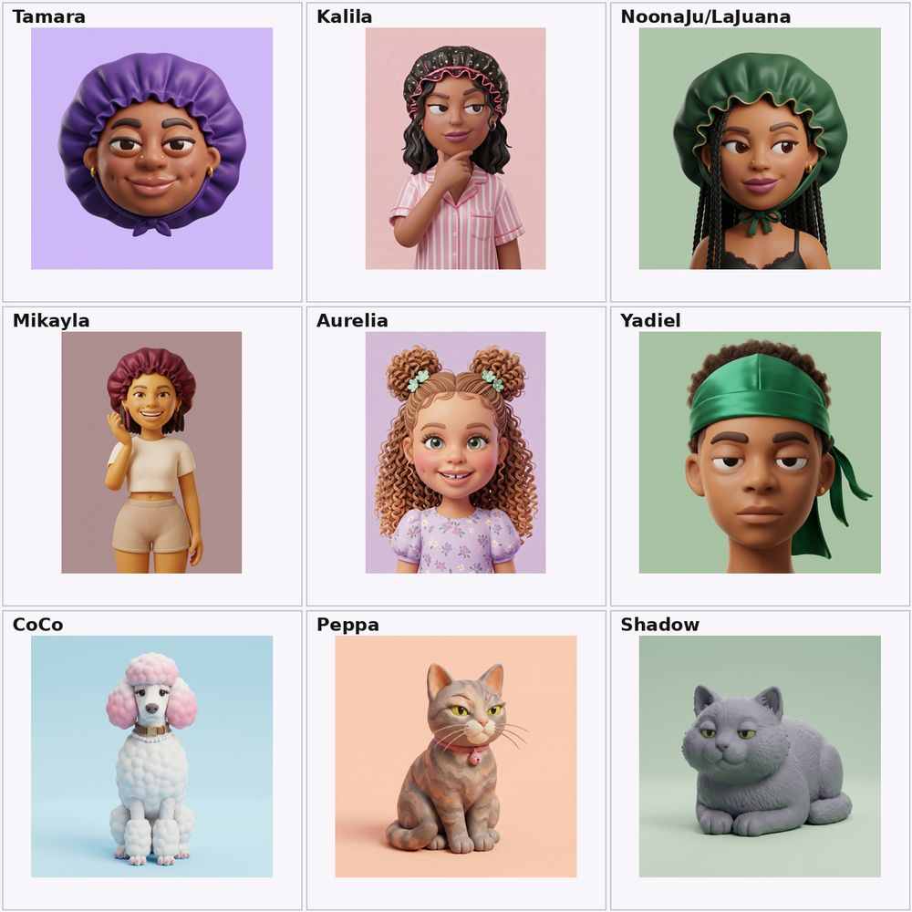

How I built a perfectly consistent AI cast
The hardest part of making an AI film isn't getting one good frame. It's getting the same character to show up, on-model, in frame number three hundred. Here's the exact system I use to keep ten characters consistent across a whole series.

The project
BonnetNoona is a faceless claymation comedy series about sisters building an influencer brand and gloriously failing. Six human characters, four pets, soft puffy 3D claymation, warm mockumentary lighting, shot vertical for TikTok. The whole thing lives or dies on one thing: do the characters stay themselves from shot to shot?
01 Write the canon before you generate anything
Before a single image, I write a canon bible — the single source of truth for the whole series. It locks the stuff a model loves to drift on: each character's exact color, skin tone, scale relative to the others, personality, and the things that must never happen.
A few real lines from mine:
- Tamara — deep purple bonnet, the Producer, tallest in the cast.
- Kalila — warm medium-brown, do not darken; pleasant and mildly bored, never angry.
- CoCo — WHITE curly poodle, PINK ears, knee-height — not brown, not tan, not a lapdog.
Those "nots" are doing real work. Half of consistency is telling the model what to stop guessing.
02 Lock each character as a reusable reference
This is the part that actually solves consistency. Each character gets generated once as a clean front-facing reference, then saved as a reusable element with its own ID. From then on I don't re-describe their face — I summon them by reference, so the bonnet, skin tone, and proportions come back identical every time.
In the prompt it looks like this — drop the element ID in, then describe only the action:
<<<tamara-element-id>>> Tamara in her deep purple satin bonnet,
striding in mid-direction with one finger up, holding CoCo's leash.
Producer energy. Cozy living room, handheld mockumentary framing.
[ + global style block ]

03 Paste the same style block into every shot
Consistency isn't just faces — it's the look. I keep one global style block and paste it, unchanged, into every single still. It carries the medium, the lighting, and a long list of "no"s:
Soft puffy 3D claymation, matte clay surfaces, rounded forms,
satin bonnets, cozy interior, warm mockumentary lighting.
Warm brown matte clay skin, uniform tone per character.
No flat emoji/vector, no photoreal, no glam, no harsh caricature. 9:16.Boring? Yes. But the model has no memory between generations — the style block is its memory.
04 Stills first, motion only where the joke lives
I generate everything as stills, then only animate the shots where movement carries the comedy — the dog yanking someone out of frame, a secret giggle, the chaos peak. Everything else holds as a still with a slow push-in. It's cheaper, faster, and far more controllable than animating end to end.
05 Assemble and stamp the buttons
Final assembly happens in CapCut: stills and clips on a timeline at ~2.5–3s each, caption "buttons" dropped on-beat (PRODUCER MODE: ACTIVATED, THE QUEEN DECLINES), snap zooms on the talking beats, and a freeze-frame end card.
What I'd tell anyone starting
You do not need to be technical. You need a clear vision and the patience to write your "nots" down once. The reference-element trick is the whole game — lock your characters, reuse them relentlessly, and let the canon doc be the memory the model doesn't have.
Say it with your bonnet on.
Want the full canon template or the prompt cards? Reach out.
Get in touch →